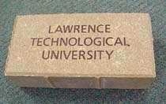

|
Nov
2000
-
For this
year's ACM Regional Programming Contest,
101 teams from 53 universities/colleges met at two satellite sites to
renew their annual battle for bragging rights for "The Programmer
Team for the Year" and a spot in the International Competition to be
held next March in Vancouver, British Columbia.
This was the first year that this 5-hour competition was held at two
separate sites, the University of Cincinnati in Cincinnati, Ohio and Case
Western Reserve University in Cleveland, Ohio. The contest officials
had two goals for this contest: one, to have a very diverse,
interesting set of problems -- they succeed admirably; two, to have
most teams solve one problem -- they failed miserably as only 52 teams did
so. One of Lawrence Tech team members called the set "The
Problems from Hell". Lawrence Tech team members were:
-
C-Sharp:
Solved one problem -- rank : 28th
Team
Captain: Carolyn Begle -- CS Senior Carolyn participated in
last year's competition at the University of Waterloo and was one of
two returning team members. She will be graduating in December.
Team
Member: John Mysliwiec -- CS Junior John is one of
four new members for this year's competition.
Team
Member: Mark Wagner -- MCS Junior Mark was the other
returning team member from last year. He is the second student
to have started competing as a sophomore. He is one of three students
that Dr. Chung pointed out to the Team Coach/Advisor to be a member.
-
B-Sharp:
Solved one problem -- rank : 34th (tied)
Team Member: Colin Black -- Comp Eng Junior, Colin is the
Computer Engineering student to be a member of our programming teams.
He is the second student pointed out by Dr. Chung.
Team Member: Rob Ramey -- MCS Senior, Rob will be graduating in
May 2001 and it is unfortunate that he won't be able to compete again
for us.
Team Member: Andrey Shvartsman -- Physics/CS Junior Andrey is
our first Physics/CS major to compete in this contest and he is the
third student pointed out by Dr. Chung.
University/Colleges
we beat in the contest: University of Michigan - Dearborn, Saginaw
Valley State University, Albion College, Alma College, Central Michigan
University, Hope College, University of Notre Dame, Oberlin College,
Sheridan College (one of the host sites for next year), Western Michigan
University (Report submitted by Team Coach/Team Advisor, Prof. Howard Whitston)
-
Saturday.
Nov. 11, 2000 is the day for the M.A.T.H. Challenge!
(Michigan Autumn
Take-Home Challenge)
We have 7 students in 3 teams ready to take the team contest--10
questions,
3 hours, pencil and paper only! We are competing against 26 teams
from
11 Michigan small and medium-size colleges. We each take the exam on our
home campus, and the results are relayed back to us by email. A
plaque goes to the top 4 teams. LTU has won a plaque in each of the
last 2 years. The students are: Ken Kopp, Steve Holcomb,
Toby Hackstock, Bill Kolasa, Brandi Shuler, Ayad
Yacoub, Tony Berard. (Reported by Faculty Advisor--Prof. Ruth
Favro ) Here are Picture1, Picture2,
Picture3.
-
NEW
Online Learning;
Try our online Learning from NETg. See what courses are currently available. If for some reason NETg
doesn't run, call the Veraldi Center for assistance at (248) 204-3750.
(NETg
courses are licensed to Lawrence Technological University for use ONLY by
LTU Students, LTU Faculty, and LTU Staff. All others are in violation of
the license agreement.)
-
The 2000
Faculty/Staff Campaign has begun under the slogan of "Our
Students Matter: Giving Where We Work." Have
a look at 4x4 Brick
and 8x8 Brick for
Brick Paver Recognition program!
-
11-11-00, Dr. Chung introduced MCS programs during the
"Campus Visit Day".
-
11-9, Dr. Chung was recognized in The
Detroit News page 11A, for his effort to help the Children's Home of Detroit
auction.
-
11-06, Dr. Chung gave a talk on Robotics
for ACM AI chapter in his
Robotics lab.
-
On Saturday, November 4, Dr. Chung gave a talk entitled,
Autonomous
Robotics: A
Wonderful
Motivator in Science and Engineering Education,
during the MDSTA (Detroit Metropolitan Science Teacher Association)
meeting here at LTU.
-
A group of our CS students is going to
attend an ACM programming contest in Cleveland in Nov. The Faculty Advisor is
Prof. Howard Whitston.
|


Math.
Challenge

Faculty/Staff Campaign |


{kind=link}
{kind=link}
{kind=link}
{kind=link}
{kind=link}
{kind=link}
{kind=link}
{kind=link}
{kind=link}
{kind=link}
{kind=link}
{kind=link}
{kind=link}